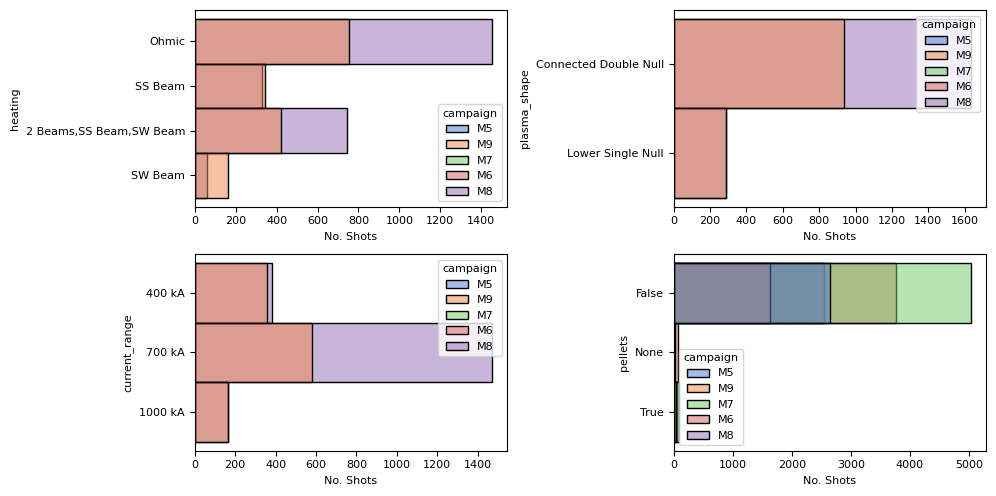

! pip install matplotlib pandas seaborn intake
Show code cell output
Requirement already satisfied: matplotlib in /opt/homebrew/anaconda3/envs/mast-book/lib/python3.11/site-packages (3.9.3)
Requirement already satisfied: pandas in /opt/homebrew/anaconda3/envs/mast-book/lib/python3.11/site-packages (2.2.3)
Requirement already satisfied: seaborn in /opt/homebrew/anaconda3/envs/mast-book/lib/python3.11/site-packages (0.13.2)
Requirement already satisfied: intake in /opt/homebrew/anaconda3/envs/mast-book/lib/python3.11/site-packages (2.0.7)
Requirement already satisfied: contourpy>=1.0.1 in /opt/homebrew/anaconda3/envs/mast-book/lib/python3.11/site-packages (from matplotlib) (1.3.1)
Requirement already satisfied: cycler>=0.10 in /opt/homebrew/anaconda3/envs/mast-book/lib/python3.11/site-packages (from matplotlib) (0.12.1)
Requirement already satisfied: fonttools>=4.22.0 in /opt/homebrew/anaconda3/envs/mast-book/lib/python3.11/site-packages (from matplotlib) (4.55.0)
Requirement already satisfied: kiwisolver>=1.3.1 in /opt/homebrew/anaconda3/envs/mast-book/lib/python3.11/site-packages (from matplotlib) (1.4.7)
Requirement already satisfied: numpy>=1.23 in /opt/homebrew/anaconda3/envs/mast-book/lib/python3.11/site-packages (from matplotlib) (2.1.3)
Requirement already satisfied: packaging>=20.0 in /opt/homebrew/anaconda3/envs/mast-book/lib/python3.11/site-packages (from matplotlib) (24.2)
Requirement already satisfied: pillow>=8 in /opt/homebrew/anaconda3/envs/mast-book/lib/python3.11/site-packages (from matplotlib) (11.0.0)
Requirement already satisfied: pyparsing>=2.3.1 in /opt/homebrew/anaconda3/envs/mast-book/lib/python3.11/site-packages (from matplotlib) (3.2.0)
Requirement already satisfied: python-dateutil>=2.7 in /opt/homebrew/anaconda3/envs/mast-book/lib/python3.11/site-packages (from matplotlib) (2.9.0.post0)
Requirement already satisfied: pytz>=2020.1 in /opt/homebrew/anaconda3/envs/mast-book/lib/python3.11/site-packages (from pandas) (2024.1)
Requirement already satisfied: tzdata>=2022.7 in /opt/homebrew/anaconda3/envs/mast-book/lib/python3.11/site-packages (from pandas) (2024.2)
Requirement already satisfied: fsspec>=2023.0.0 in /opt/homebrew/anaconda3/envs/mast-book/lib/python3.11/site-packages (from intake) (2024.10.0)
Requirement already satisfied: pyyaml in /opt/homebrew/anaconda3/envs/mast-book/lib/python3.11/site-packages (from intake) (6.0.2)
Requirement already satisfied: platformdirs in /opt/homebrew/anaconda3/envs/mast-book/lib/python3.11/site-packages (from intake) (4.3.6)
Requirement already satisfied: networkx in /opt/homebrew/anaconda3/envs/mast-book/lib/python3.11/site-packages (from intake) (3.4.2)
Requirement already satisfied: six>=1.5 in /opt/homebrew/anaconda3/envs/mast-book/lib/python3.11/site-packages (from python-dateutil>=2.7->matplotlib) (1.16.0)
import pandas as pd
import seaborn as sns
import intake
import matplotlib.pyplot as plt
plt.rcParams["font.family"] = "sans"
plt.rcParams["font.size"] = 8
sns.set_palette('muted')
Tutorial: Exploring Shot Metadata#
This notebook contains a demonstration of plotting several of the summary statistics that accompany the shot metadata.
Firstly, we’re going to load all the shot data into a pandas dataframe:
catalog = intake.from_yaml_file("/Users/ds2718/ukaea/fair-mast/src/api/static/intake/catalog.yaml")
summary = pd.DataFrame(catalog.index.level1.shots().read())
# summary = df.loc[df.campaign == 'M9']
summary
| url | preshot_description | postshot_description | campaign | current_range | divertor_config | plasma_shape | comissioner | facility | shot_id | ... | cpf_vol_ipmax | cpf_vol_max | cpf_vol_truby | cpf_wmhd_ipmax | cpf_wmhd_max | cpf_wmhd_truby | cpf_zeff_ipmax | cpf_zeff_max | cpf_zeff_truby | cpf_zmag_efit | |
|---|---|---|---|---|---|---|---|---|---|---|---|---|---|---|---|---|---|---|---|---|---|
| 0 | s3://mast/level1/shots/11695.zarr | \n0.1T TF SHOT\n | \nOK\n | M5 | None | Conventional | None | None | MAST | 11695 | ... | NaN | NaN | NaN | NaN | NaN | NaN | NaN | NaN | NaN | NaN |
| 1 | s3://mast/level1/shots/11696.zarr | \nSTANDARD 0.3T TF SHOT\n | \nOK\n | M5 | None | Conventional | None | None | MAST | 11696 | ... | NaN | NaN | NaN | NaN | NaN | NaN | NaN | NaN | NaN | NaN |
| 2 | s3://mast/level1/shots/11697.zarr | \nRAISE TO 0.5T\n | \nOK, ALARMS ARE LOWER\n | M5 | None | Conventional | None | None | MAST | 11697 | ... | NaN | NaN | NaN | NaN | NaN | NaN | NaN | NaN | NaN | NaN |
| 3 | s3://mast/level1/shots/11698.zarr | \nRAISE TO .56T\n | \nSTILL ALARMS BUT LOWER AGAIN\n | M5 | None | Conventional | None | None | MAST | 11698 | ... | NaN | NaN | NaN | NaN | NaN | NaN | NaN | NaN | NaN | NaN |
| 4 | s3://mast/level1/shots/11699.zarr | \nRAISE TO .58T\n | \nOK\n | M5 | None | Conventional | None | None | MAST | 11699 | ... | NaN | NaN | NaN | NaN | NaN | NaN | NaN | NaN | NaN | NaN |
| ... | ... | ... | ... | ... | ... | ... | ... | ... | ... | ... | ... | ... | ... | ... | ... | ... | ... | ... | ... | ... | ... |
| 15916 | s3://mast/level1/shots/30467.zarr | \nRepeat with new neutron camera position.\ncH... | \nTwo times lower DD neutron rate than referen... | M9 | 700 kA | Conventional | Connected Double Null | None | MAST | 30467 | ... | 9.029202 | 9.046394 | 0.0 | 49469.122469 | 52653.445 | 0.0 | NaN | NaN | NaN | 0.013202 |
| 15917 | s3://mast/level1/shots/30468.zarr | \nRepeat with new neutron camera position.\ncH... | \nGood beam.\nGood repeat.\n | M9 | 700 kA | Conventional | Lower Single Null | None | MAST | 30468 | ... | 9.102411 | 9.107017 | 0.0 | 48516.962675 | 49382.133 | 0.0 | NaN | NaN | NaN | 0.012445 |
| 15918 | s3://mast/level1/shots/30469.zarr | \nRepeat with increased beam power (74 kV)\ncH... | \nGood shot. Modes present.\n | M9 | 700 kA | Conventional | Connected Double Null | None | MAST | 30469 | ... | 8.988730 | 9.047923 | 0.0 | 47466.249616 | 49115.805 | 0.0 | NaN | NaN | NaN | 0.015299 |
| 15919 | s3://mast/level1/shots/30470.zarr | \nRepeat last using hydrogen in outboard and c... | \nNo HF gas.\n | M9 | 700 kA | Conventional | None | None | MAST | 30470 | ... | 9.687049 | 10.055509 | 0.0 | 17290.432865 | 22310.516 | 0.0 | NaN | NaN | NaN | 0.015164 |
| 15920 | s3://mast/level1/shots/30471.zarr | \nThe last plasma:\nConvert to i/b Helios 1724... | \nGood shot.\n | M9 | 700 kA | Conventional | Lower Single Null | None | MAST | 30471 | ... | 8.817559 | 9.283702 | 0.0 | 38063.582380 | 40906.090 | 0.0 | NaN | NaN | NaN | 0.014340 |
15921 rows × 283 columns
Summary Statistics About Shots#
Let’s look at a summary of simple counts of different shot metadata.
fig, axes = plt.subplots(2, 2, figsize=(10, 5))
ax1, ax2, ax3, ax4 = axes.flatten()
sns.histplot(summary, y='heating', hue='campaign', ax=ax1)
sns.histplot(summary, y='plasma_shape', hue='campaign', ax=ax2)
sns.histplot(summary, y='current_range', hue='campaign', ax=ax3)
sns.histplot(summary, y=summary.pellets.astype(str), hue='campaign', ax=ax4)
for ax in axes.flatten():
ax.set_xlabel('No. Shots')
plt.tight_layout()

Plasma Beta (\(\beta\)) v.s Confinement Time (\(\tau_E\))#
This plot can show how the efficiency of energy confinement varies with plasma pressure.
plt.figure()
sns.scatterplot(summary, y='cpf_tautot_max', x='cpf_betmhd_max', hue='heating')
plt.xlim(0, 18)
plt.ylim(0, 1)
# plt.yscale('log')
plt.ylabel('Confinement time $\\tau_E$ (s)')
plt.xlabel('Plasma Beta $\\beta$ (%)')
Text(0.5, 0, 'Plasma Beta $\\beta$ (%)')
Plasma Temperature (\(T_e\)) vs. Plasma Density (\(n_e\))#
This can reveal the relationship between temperature and density, which is critical for achieving the conditions necessary for fusion.
plt.figure()
sns.scatterplot(summary, y='cpf_te0_ipmax', x='cpf_ne0_ipmax', hue='current_range', alpha=0.8)
plt.xlim(0, .8e20)
plt.ylim(0, 1750)
plt.ylabel('Temperature $T_e$ (eV)')
plt.xlabel('Density $n_e$ ($m^{-3}$)')
Text(0.5, 0, 'Density $n_e$ ($m^{-3}$)')
Plasma Current (\(I_p\)) vs. Confinement Time (\(\tau_E\))#
This can indicate how the plasma current affects the confinement time, providing insights into stability and performance.
plt.figure()
sns.scatterplot(summary, y='cpf_ip_av', x='cpf_tautot_max', hue='current_range', alpha=0.8)
plt.xlim(0, 1)
plt.xlabel('Confinement Time $\\tau_E$ (s)')
plt.ylabel('Average Plasma Current $I_p$ (kA)')
Text(0, 0.5, 'Average Plasma Current $I_p$ (kA)')